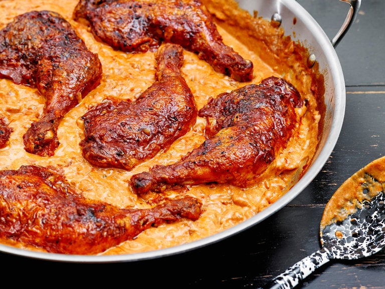

Chicken Paprikash

Description
Spices lose their flavor over time but few as quickly as paprika, which starts out tasting of pepper and sunshine but deteriorates in but a few months to sawdust and bitterness. For this recipe, get some new at the market: sweet or hot Hungarian paprika is best, but the generic article isn’t terrible and the smoky Spanish varieties known as pimentón de La Vera would not be out of place either, lending a deep, woodsy aroma reminiscent of cooking over an open fire. It’s a dish that pairs beautifully with butter-slicked egg noodles.
Ingredients
- 3 to 4 pounds chicken thighs and drumsticks, or whole chicken legs
- Kosher salt and freshly ground black pepper to taste
- 1 tablespoon neutral oil, like canola
- 3 tablespoons unsalted butter
- 1 large yellow or Spanish onion, peeled and diced
- 3 cloves garlic, peeled and minced
- 3 tablespoons Hungarian paprika, sweet or hot, or a combination
- 3 tablespoons all-purpose flour
- 1 cup canned crushed tomatoes or 1 large ripe tomato, chopped
- 1 cup chicken broth, homemade or, if not, low-sodium
- 1 pound egg noodles
- ¾ cup sour cream
- Heat oven to 400. Season the chicken aggressively with salt and pepper. Heat the oil and 1 tablespoon of the butter in a large, heavy, oven-safe sauté pan or Dutch oven set over high flame, until the butter is foaming. Sear the chicken in batches, skin-side down, until it is golden and crisp, approximately 5 to 7 minutes. Then turn the chicken over, and repeat on the other side, approximately 5 to 7 minutes. Remove chicken to a plate to rest.
- Pour off all but 3 tablespoons of the accumulated fat in the pot. Return the pot to the stove, over medium heat, and add the onion. Cook, stirring frequently with a spoon to scrape off any browned bits of chicken skin, until the onion has softened and gone translucent, approximately 5 minutes. Add the garlic, and stir again, cooking it until it has softened, approximately 3 to 4 minutes. Add the paprika and the flour, and stir well to combine, then cook until the mixture is fragrant and the taste of the flour has been cooked out, approximately 4 to 5 minutes.
- Add tomatoes and broth, whisk until smooth and then nestle the chicken back in the pan, skin-side up. Slide the pan or pot into the oven, and cook until the chicken has cooked through and the sauce has thickened slightly, approximately 25 to 30 minutes.
- Meanwhile, set a large pot of heavily salted water to boil over high heat. Cook noodles in the water until they are almost completely tender, approximately 7 to 8 minutes. Drain the noodles, and toss them in a bowl with the remaining butter, then toss again to coat.
- Place the chicken on top of the noodles, then add the sour cream to the sauce, stir to combine and ladle it over the whole.